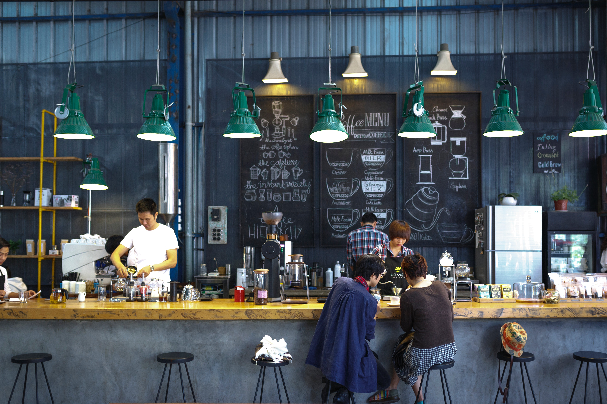

Blog 1
establecimiento 1

Blog 2
establecimiento 2

Blog 3
establecimiento 3

"Despierta tus sentidos en cada sorbo: donde el aroma y el sabor se fusionan en cada taza."
Informacion
Que cada taza de café alegre tu dia

Consta básicamente de dos ingredientes: café y leche.

Es la extracción de 30 mililitros de bebida a partir de 7 gramos de café molido, con agua a 88 °C, 9 bares de presión y en un tiempo de 25 segundos.

Una variante del café con leche. Como este, suele llevar un tercio de expreso y dos tercios de leche vaporizada, pero se añade una parte de chocolate.


El mejor servicio para los clientes, se sientan satisfechos en nuestro establecimiento y que tengan un buen dia Servicios
Lunes 8:00 am a 7:00 pm Martes 8:00 am a 7:00 pm Miercoles :00 am a 6:00 pm Jueves 8:00 am a 9:00 pm Viernes 8:00 am a 8:00 pm
informacionIngredientes: 2 tazas de nata montada, 500 ml de café fuerte, 4 cucharaditas de azúcar moreno, 8 cucharadas de Irish Whisky (whisky irlandés). Montar la nata ligeramente y ponerla en la nevera. Hierva el agua y prepare el café. Echar dos cucharadas de azúcar moreno respectivamente en dos vasos. Llenar los vasos en tres cuartas partes con el café fuerte. Echar cuatro cucharadas de whisky a cada vaso. Terminar con un poco de nata montada en cada vaso. Beber a sorbos el delicioso “café irlandés” a través de la nata.
informacionten la mejor experiencia
establecimiento 1
establecimiento 2
establecimiento 3